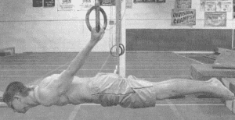
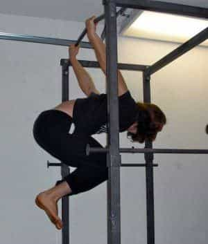
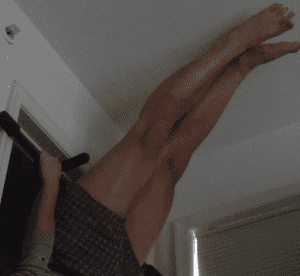

< < < Back
How The Back Lever Can Increase Your Strength And Flexibility – Return Of Kings
If you will recall, a few months ago I wrote an article about gymnastics for the masculine man. Namely, how masculine men can utilize gymnastics to develop a great degree of strength, dexterity, and flexibility with very little space or equipment. And I still stand by that article, especially as my foot is still keeping me out of the gym until this coming April at the least. I am still capable of doing the static gymnastic poses.
But, of course, these are a daunting task to undertake for a man who is just beginning to train in gymnastics. The novice often doesn’t know where exactly to start. From my experience, the easiest fundamental gymnastic static hold to master, and the one that has the most visible signs of progress, is the back body lever.

What Is It?
The back body lever is a static pose where your arms are held above your prone body as it hangs in mid air, with your head in front and the legs extending horizontally. Much like its easier forebear “skinning the cat” (discussed below), this one also develops the strength and dexterity of the shoulder rotator, as you are essentially hanging from this anatomical feature.
As you might expect, you won’t be able to go into the full body lever right from the beginning, you have to work up to it through a series of progressively more complex exercises, the same as any other type of calisthenic.
To begin with, start with the inverted tuck hang

This isn’t me, because my pull-up bar is situated in a way that the picture would be nothing more than my ass sticking out of a door frame.
You achieve this hold by hanging from a bar, and then lifting your legs up and through the “Grapevine” you make with your arms, bringing your legs down until your knees are parallel to the floor. This motion is dubbed “skinning the cat.”
When done properly, you will feel muscular tension in your shoulders and in the muscles of the armpit. Keep the legs tucked tight, and just hold it for 10 seconds.
Once you’ve done that, you can attempt the straight back tuck hang.
It’s just like the inverted tuck hang, but you keep your back straight. I find that pushing down with my hands and flexing the lats, combined with actively concentrating on straightening the back, will give you the proper pose.
Doing this pose will increase the involvement of the muscles of your lower back. You will noticeably feel a greater “burn”.
Once you have mastered this, try to extend your legs down to the floor while still keeping the back straight. This involves more strength and flexibility of the lower back, and in reversing the hold begins to involve the muscles of the hip flexors and abdomen as well: when you have assumed the proper pose (that is to say, going into the straight back hang with the legs fully extended), use the muscles of the torso to roll your body upwards and bring your feet back above your head while simultaneously keeping the back straight. You can do this for repetitions for a decent abdominal workout, but we of course would like to move on.
The last step I will be teaching you today is the inverted straight hang. More specifically, a modified variation of this hold. If you have gymnastic rings, these can be simply done (note that I use the term “simply” rather than “easily,” nothing about these exercises is particularly easy) by starting the “skin the cat”, rotating only half way so that your back is vertical, and then extending the legs until your back, hips, and legs are completely vertical and straight.
Seeing as I don’t have gymnastic rings, and it’s more likely that my readers own pull-up bars or have a conveniently placed horizontal support than own a pair of gymnastic rings, I will instead teach you a slightly modified form of the inverted straight hang.
Begin in the half-inverted hang as stated above. Then extend your feet and touch the ceiling. Unless you’re really short, your hips are still about halfway bent. Begin rolling back towards the full inverted hang, but do not complete the rotation. Each inch that you rotate further, straighten your hips a little bit more and extend your legs a bit farther. A good way to judge this is to progressively lean higher and higher portions of your buttocks against the horizontal bar, eventually reaching the lumbar region of the back, as I attempted to show in this image below.

I couldn’t have you people thinking I couldn’t “walk the walk.” To answer your questions: 1) Yes, this is the best possible picture I could have taken and 2) Yes, I usually don’t wear pants at home. Deal with it.
You will be slightly angled, but your body will be straight, and that is what is important.
And from here you can begin trying to slowly lower yourself into forms of back levers, “lowering into a hold” being a concept that is of the utmost importance in gymnastics.
But that is an article for another day.
Read More: How Gymnastics Can Improve Your Total Body Fitness